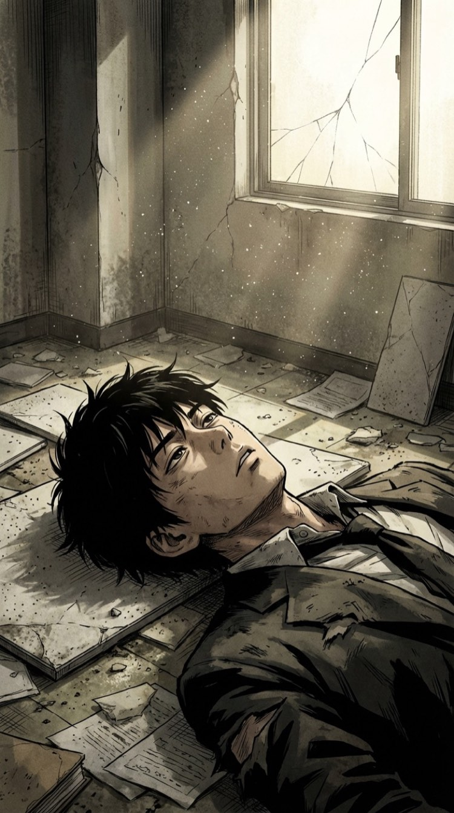
头好痛。
我是在哪……？天花板怎么裂了……
灰尘和碎石落在脸上，把我从昏迷中刺醒。办公室的日光灯全灭了，只有窗户裂缝里透进来一束浑浊的光。
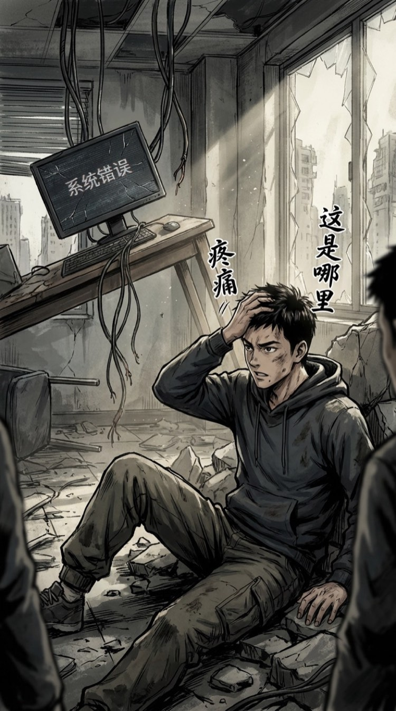
我撑着地面坐起来，脑袋嗡嗡作响。
我记得……我在加班。然后屏幕突然全黑了，接着就是巨响——
显示器歪歪斜斜挂在桌边，电脑完全死机。整个办公室像被巨人踩过一样。
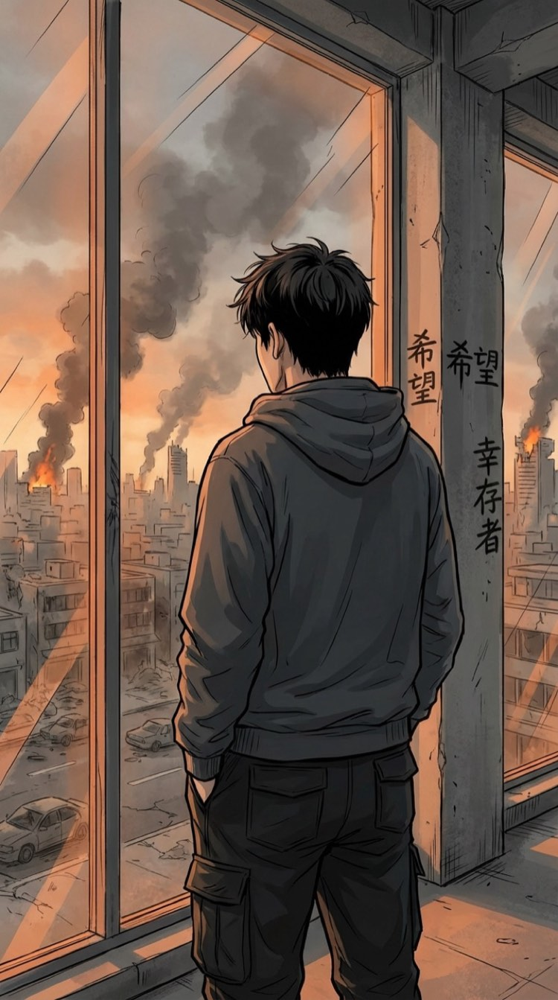
我走到落地窗前——然后整个人僵住了。
城市还在。但不是我认识的那个城市了。至少五个方向冒着黑烟。远处有建筑在燃烧。街道上横七竖八停满了车，有些翻了过来。
这是……战争？地震？到底发生了什么？
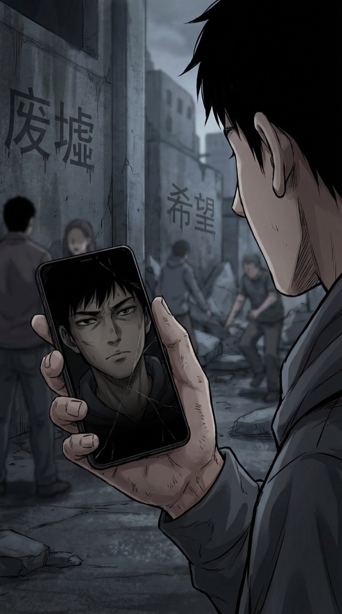
手机。我摸出手机——黑屏。长按电源键，没反应。什么信号都没有。
完全死了。不是没电，是……彻底坏了。
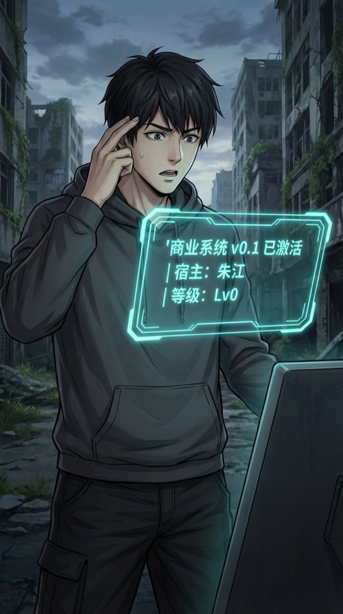
就在这时——
眼前突然浮现出一个半透明的光屏。不是手机屏幕，是直接出现在视野里的。
……我脑子坏了吗？这是什么？我是不是被砸到头了？
我使劲眨了几下眼。光屏还在。甚至跟着我的视线移动。
不对，这也太清晰了。幻觉不会有这么高的分辨率吧？
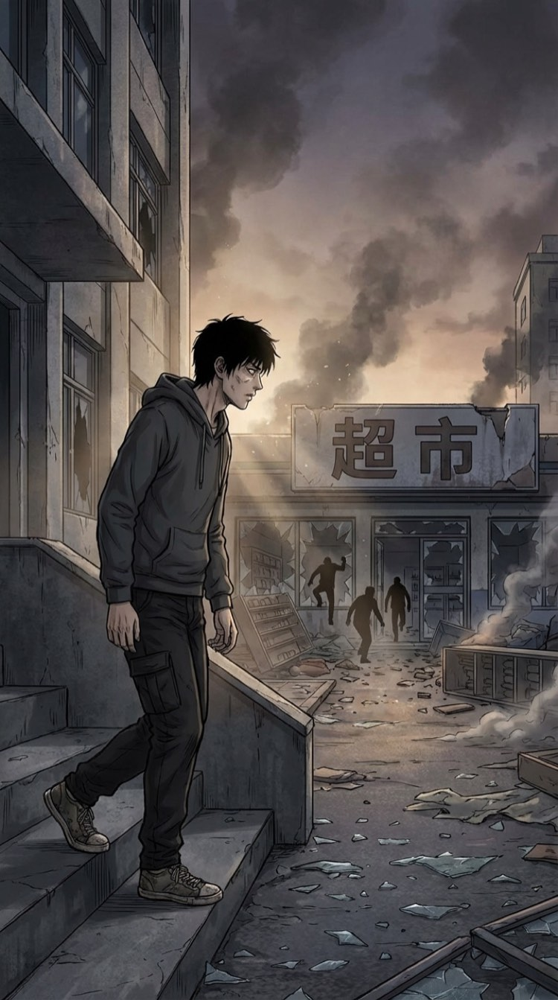
我决定先下楼。不管脑子里这个"系统"是什么鬼，活下去比想清楚更重要。
楼下超市已经被砸开了。玻璃碎了一地，货架被推倒，几个人正在里面翻找食物。
秩序……已经崩了。
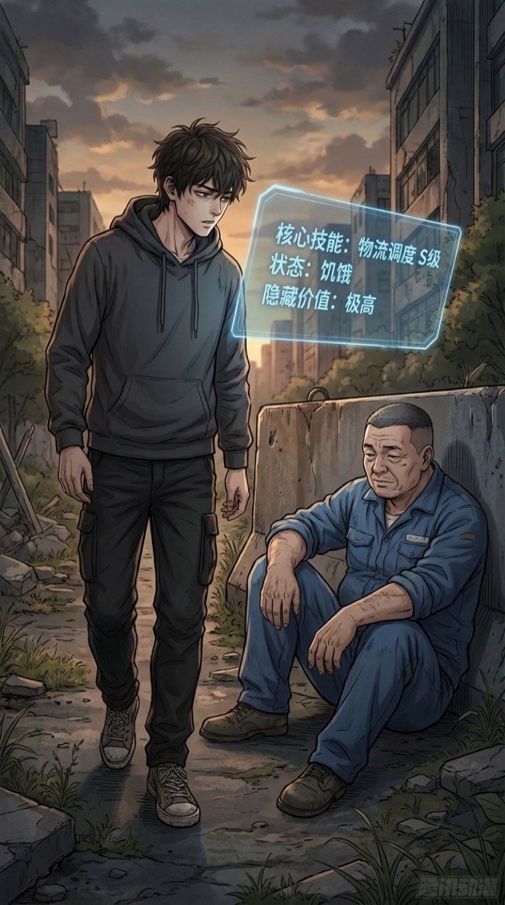
路过一个路障时，我看到一个中年大叔蹲在路边。壮实，方脸，穿蓝色工装，一脸疲惫。
然后——那个该死的系统面板又出现了。这次浮在这个大叔头顶。
等等……物流调度S级？一个快递大叔？
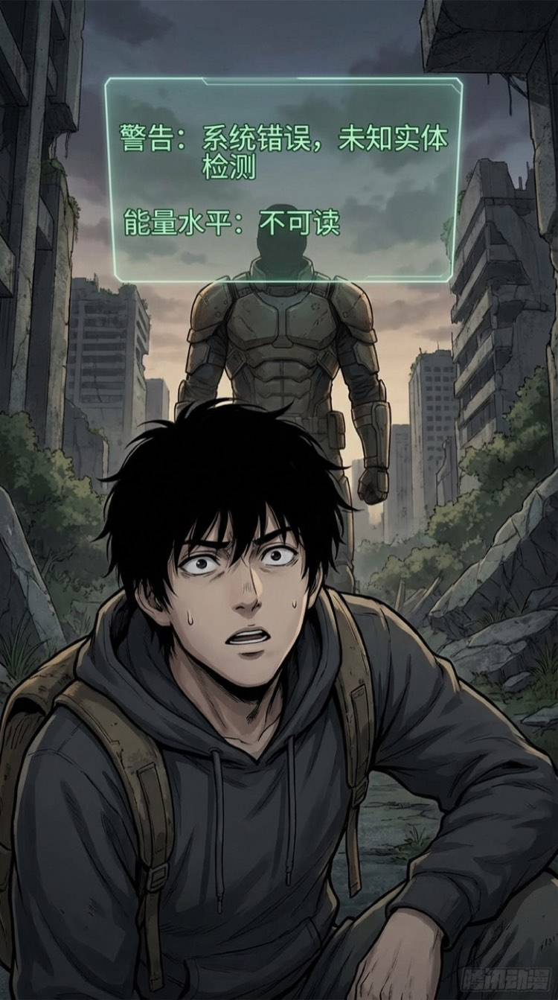
这系统到底怎么评的级？S级物流调度放在末世前，那是京东级别的供应链总监啊。
而这个人，在末世第七天，饿着肚子蹲在路边。
价值被严重低估了。就像……上个时代的比特币。
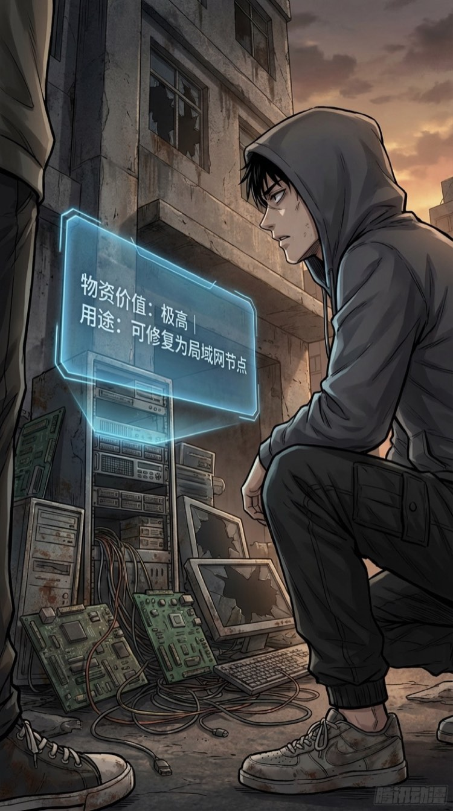
再往前走，路边垃圾堆里有一堆被人丢弃的电子元件。旧服务器、硬盘、电路板——别人当废铜烂铁扔的。
在末世，值钱的东西和以前完全不一样了。黄金不能吃，但一台能联网的服务器，可能比一吨黄金有用。
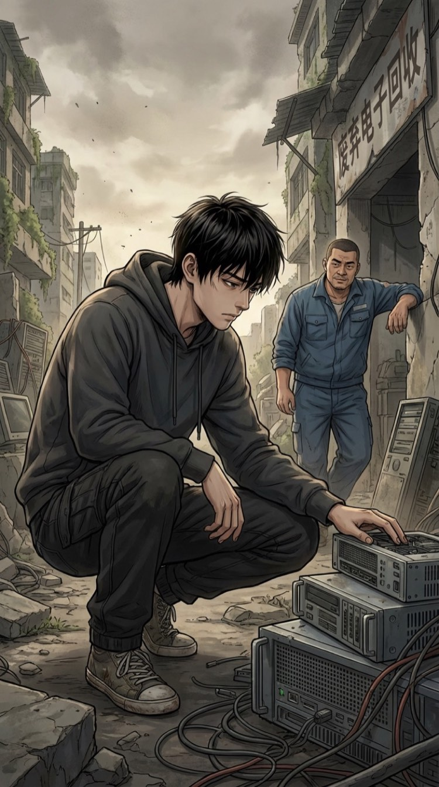
我蹲下来仔细翻看那堆"垃圾"。身后传来一个粗犷的声音。
「小伙子，你翻这些破烂干啥？能吃吗？」
是那个蓝色工装大叔。他好奇地走了过来。
来了。我的第一笔"投资"，就从这个饿了两天的物流天才开始。
我手上只剩一瓶水和两块压缩饼干。面前是一个饿了两天的人——系统告诉我他是S级物流人才。
「做生意的第一课：用短期资源换长期杠杆。」
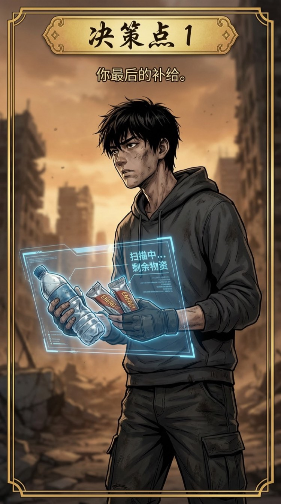
别的创业者在会议室做PPT，我在末世街头掏出最后一瓶水做天使投资。这创业故事以后怎么写商业计划书？
"投资逻辑：标的物饿了两天，估值极低，但基本面是S级。"
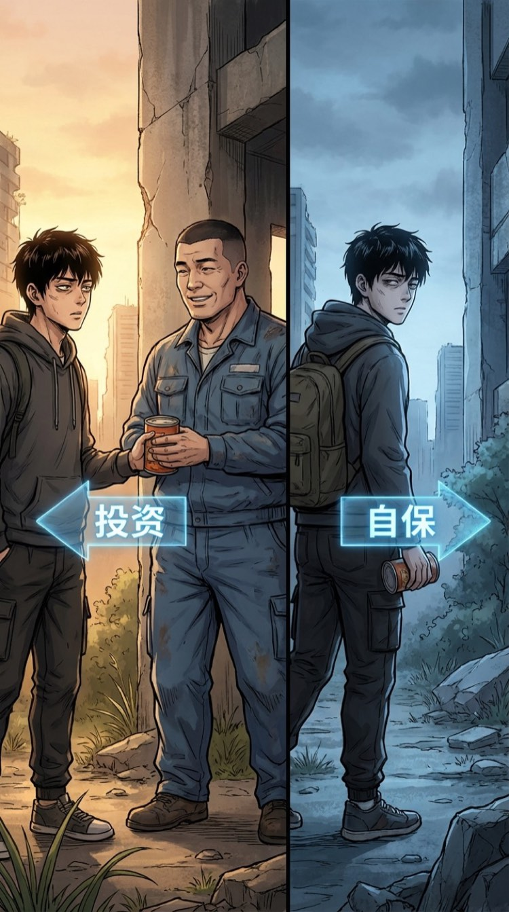
我把水和压缩饼干递过去。
「赵哥，先吃点。」
老赵愣了一下，接过去，手在发抖。他没有立刻吃，而是先看了看我。
「你……为啥？」
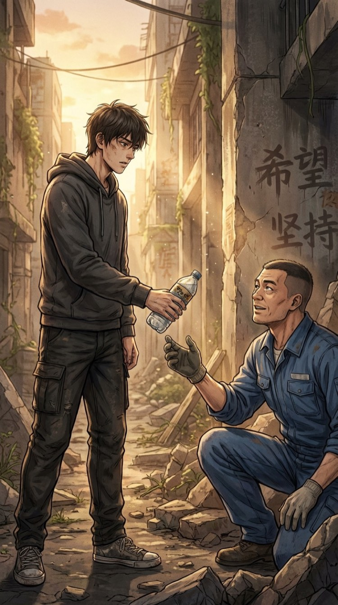
「赵哥，我知道你以前管快递站，对吧？」
他嘴里塞着压缩饼干，愣住了。
「你……你咋知道的？」
「我需要一个能调度物资的人。现在这个世界，会搬东西的人比会写代码的人值钱一万倍。」
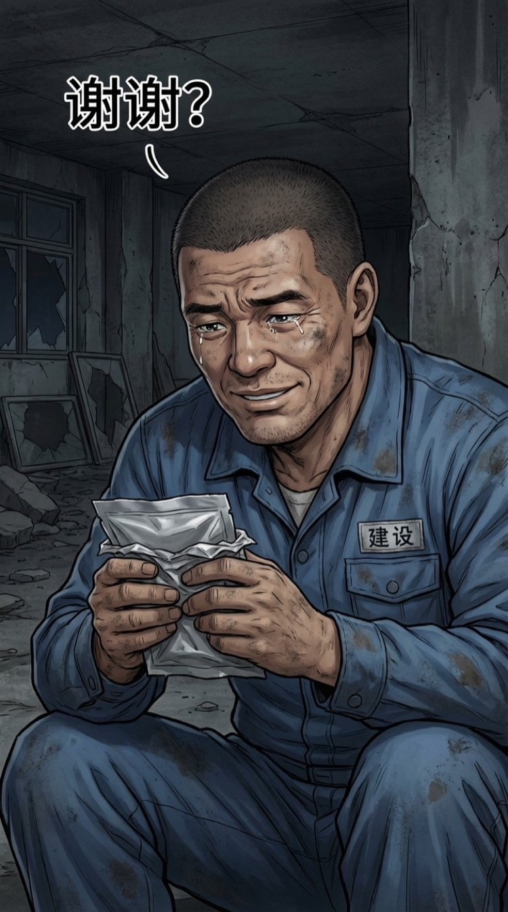
老赵的眼眶红了。不是因为饼干太干，是因为——在末世第七天，终于有人说他"有用"。
「小兄弟……你说吧，干啥都行。」
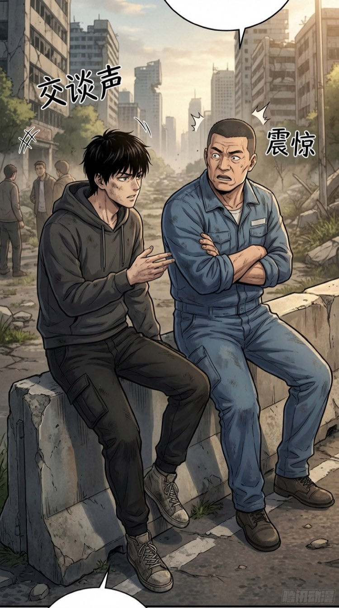
两人坐在路障上，我跟他简单说了计划：先找个据点，囤物资，建联络网。
「赵哥，你以前一天调度多少单快递？」
「高峰期？三千多单。」
三千单。在末世，三千单物资调度足够养活一个小镇。
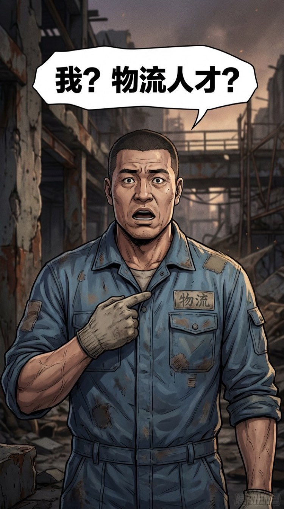
老赵指着自己，一脸不可思议。
「你说我……物流天才？我就是个送快递的啊！」
你以为你是送快递的。系统告诉我，你是末世最稀缺的战略资源之一。
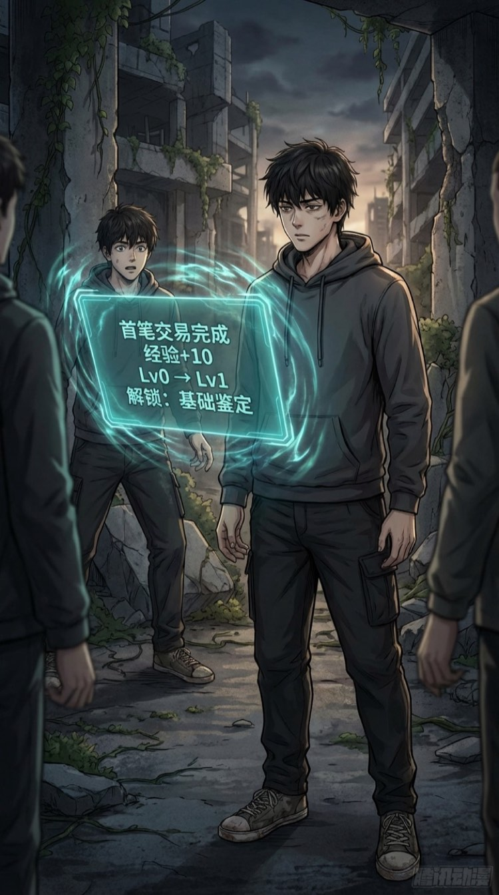
这系统……还会阴阳怪气？
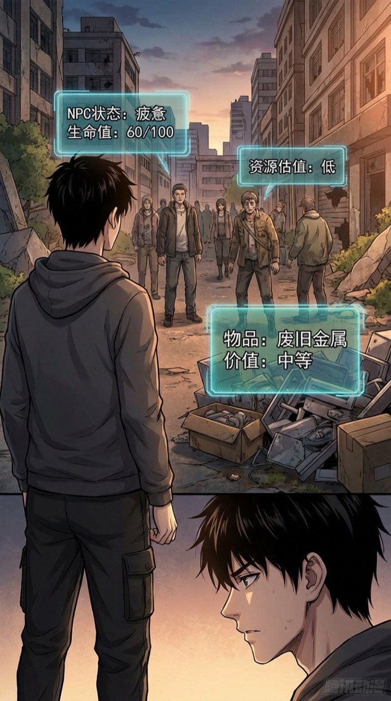
升级的瞬间，视野突然清晰了。
街道上每个人头顶都冒出了信息面板。每堆物资、每个建筑都有鉴定标签。整个世界变成了一个巨型商业沙盘。
这感觉……就像开了上帝视角的《模拟城市》。不对，是《模拟末世》。
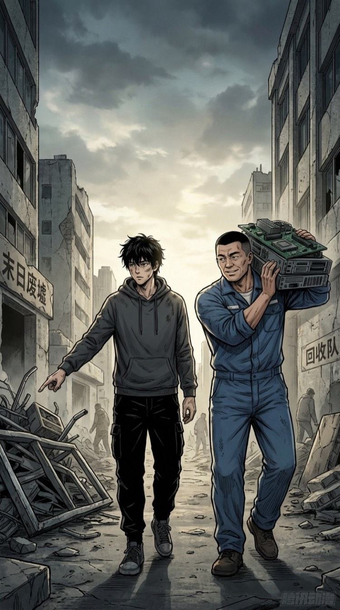
我和老赵捡起那堆"垃圾"服务器零件上路了。
「小朱，咱这是去哪？」
「找个地方安营扎寨。赵哥，你以前跑这片区域的快递吗？」
「跑了八年了，闭着眼都知道哪条路通哪。」
八年地图记忆。在GPS全挂的末世，这比任何导航软件都好使。
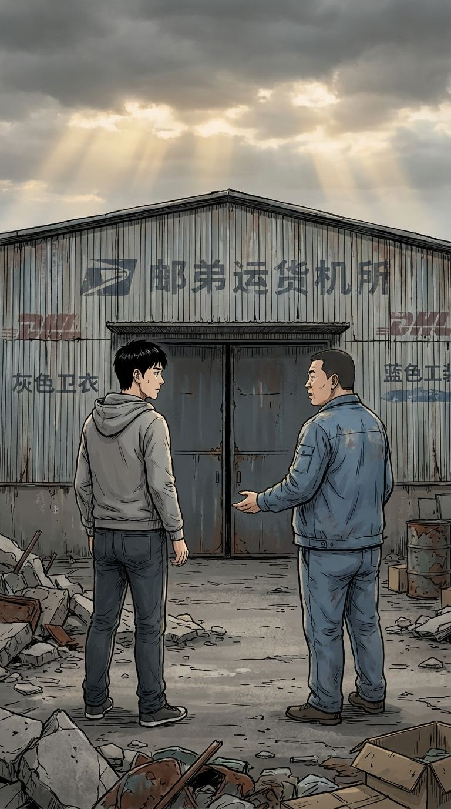
老赵带我绕了两条巷子，来到一个大型快递分拣中心门口。
「就是这儿。以前我管的站就在里面。」
A级据点。别人还在抢超市里的方便面，我已经找到了商业帝国的第一块地基。
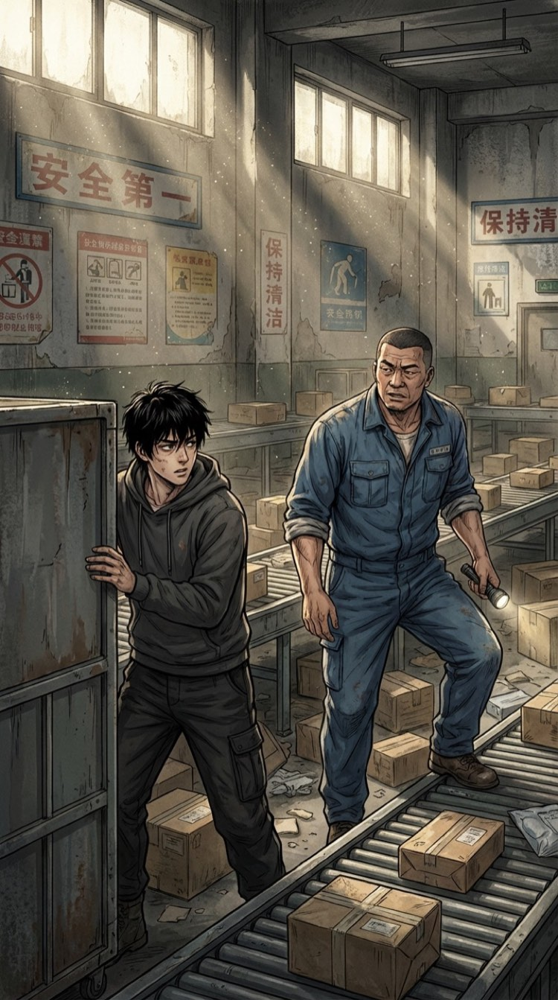
推开半掩的铁门，分拣中心里一片狼藉。传送带停在半途中，包裹散落一地。灰尘很厚，但建筑结构完好。
「赵哥，你看看发电机还能不能用。」
「嘿！这我熟！」
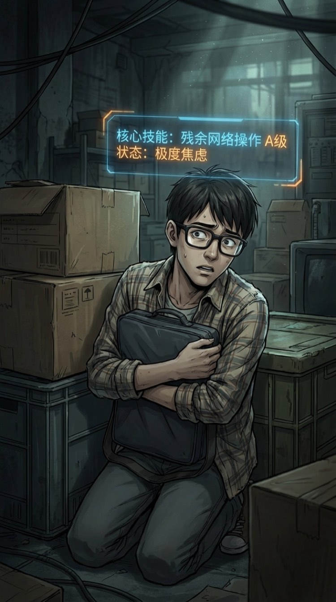
我在仓库角落发现了一个蜷缩的人影。
瘦瘦的年轻人，黑框眼镜，格子衬衫，抱着个笔记本电脑包像抱着全世界最后的宝贝。他看到我，整个人往后缩。
又一个被低估的人才。
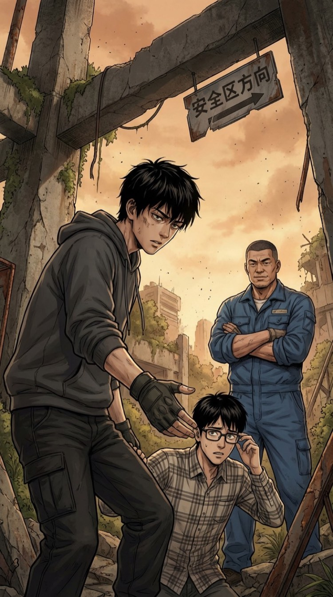
我伸出手。
「起来吧兄弟。你是程序员？」
他推了推眼镜，惊恐地看着我和身后的老赵。
「你……你们不是来抢电脑的吧？」
「放心，我是来招你的。」
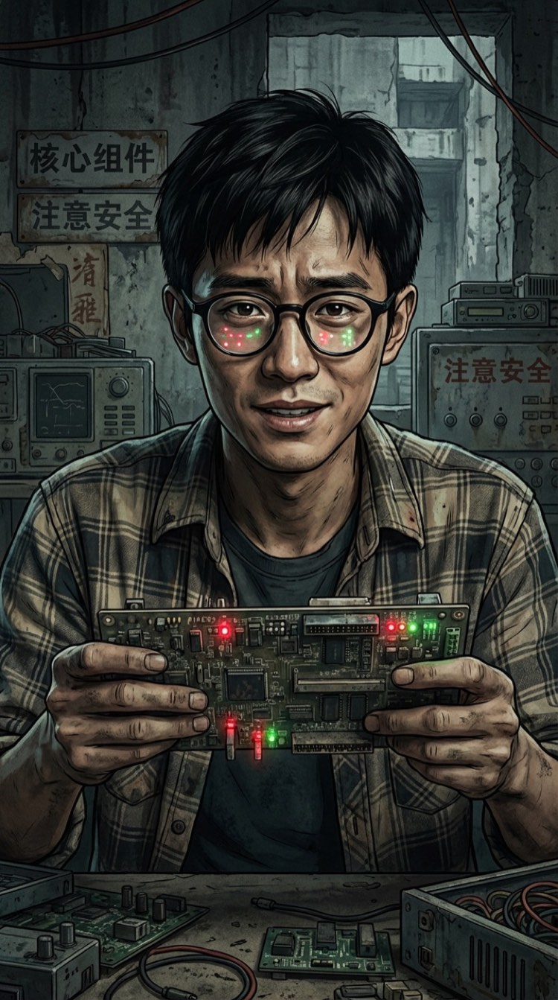
我把捡来的服务器零件摆在小陈面前。
他的眼睛瞬间亮了。那种程序员看到新硬件时的本能反应——就像猫看到逗猫棒。
「这……这是能用的！这块主板还能跑！」
成了。钓鱼要用对鱼饵。程序员的鱼饵就是能跑的硬件。
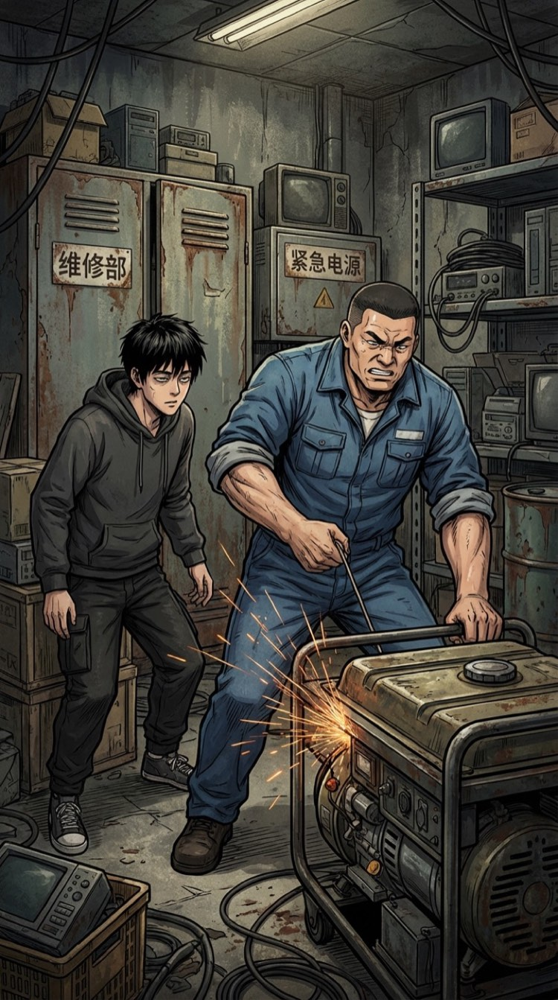
老赵在后面鼓捣发电机。壮实的胳膊拉动启动绳，一下、两下、三下——
「嘿——」
火花飞溅。
「这发电机跟我以前用的一模一样！」
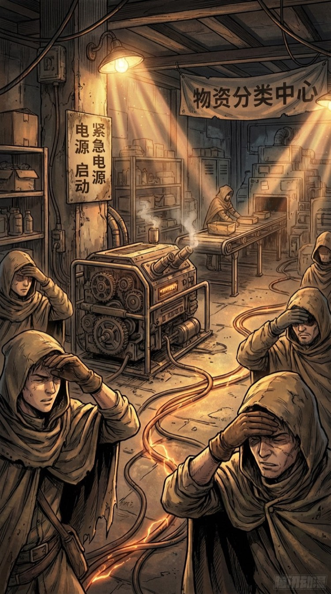
灯亮了。
只是几盏应急灯，但在黑暗了七天的末世里，那种光芒像是奇迹。
三个人都下意识地挡了一下眼睛。然后——不约而同地笑了。
末世创业第一步：有电。别笑，很多公司连这步都做不到。
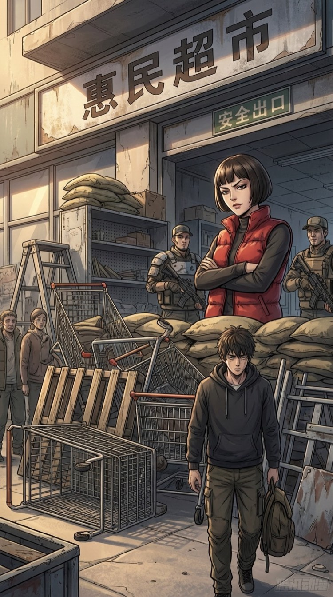
但没水、没食物。我们需要跟附近有物资的人交易。
老赵说附近三条街外有个超市还在运营——被一个叫刘姐的女人控制着。
「那个刘姐不好说话。」
我们到了超市门口。购物车和货架搭的路障，两个拿着棍子的"保安"。中间站着一个短发女人，眼神锐利得像鹰。
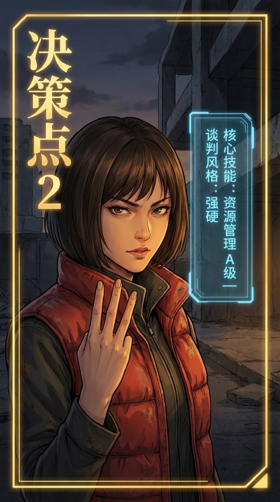
「我不做慈善。想要水和食物？」
刘姐竖起三根手指。
「拿你们的发电机来换。」
刘姐控制着唯一的物资据点。她要我们的发电机。发电机是我们的电力来源——交出去就回到黑暗时代。
「不做零和博弈。做平台，让每个人都觉得自己在赢。」
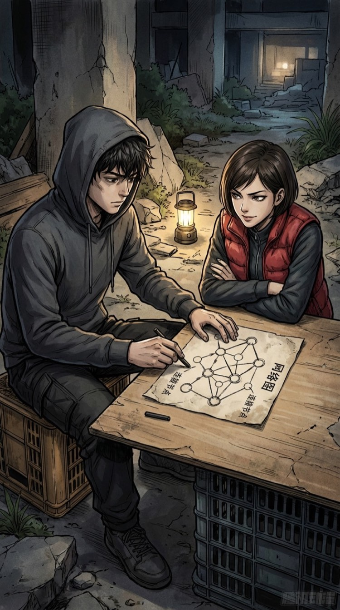
「刘姐，发电机我不换。但我有个更好的提议。」
我在一块破纸板上画了个简单的网络图：中间是她的超市，周围是其他可能存在的据点，用线连起来。
「你现在控制一个超市。但你不知道周围还有多少据点、多少人、谁有什么资源。我能帮你建一个联络网——让你成为信息中心。」
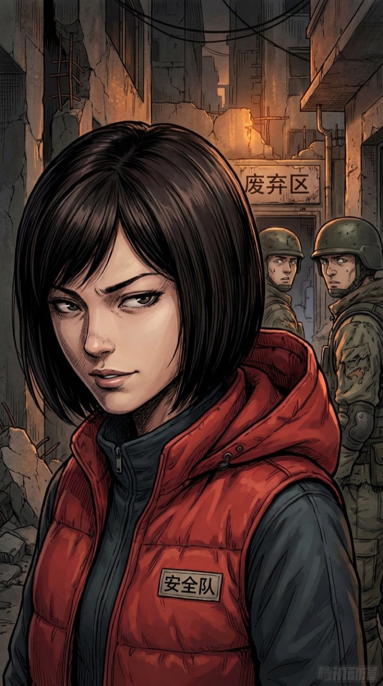
刘姐的表情从"你在逗我"变成了"继续说"。
「信息中心？什么意思？」
「意思是，谁有什么、谁缺什么、谁在哪——这些信息全部经过你。在末世，控制信息的人，比控制食物的人更强。」
她沉默了十秒。
「……先给三天的量。信不信你的，三天后看结果。」
商业谈判第一课：不要跟人抢蛋糕，告诉她你能把蛋糕做大。
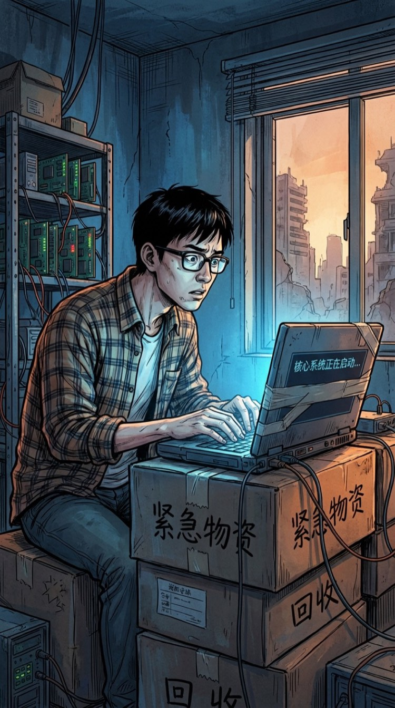
回到分拣中心。小陈像变了个人一样——把服务器零件摆了一桌，双手在键盘上飞速敲击。
「朱哥，你让我干这个我可太开心了。末世七天我第一次这么开心。」
程序员，只要有代码可以写，在哪里都能活得像在天堂。
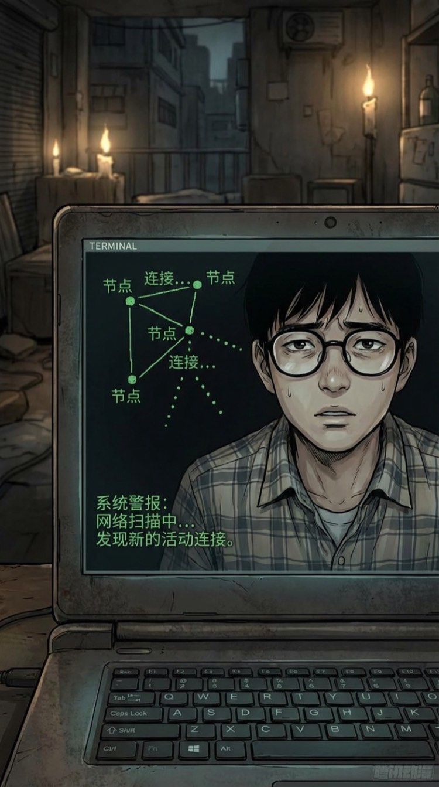
屏幕上，一个粗糙的网络拓扑图正在成形。绿色的节点一个接一个亮起来。
「信号出去了！覆盖半径大概五百米。」
「小陈，这种感觉怎么样？」
「怎么说呢……就像生产环境的bug终于复现了。那种狂喜。」
……程序员的快乐，常人真的不懂。
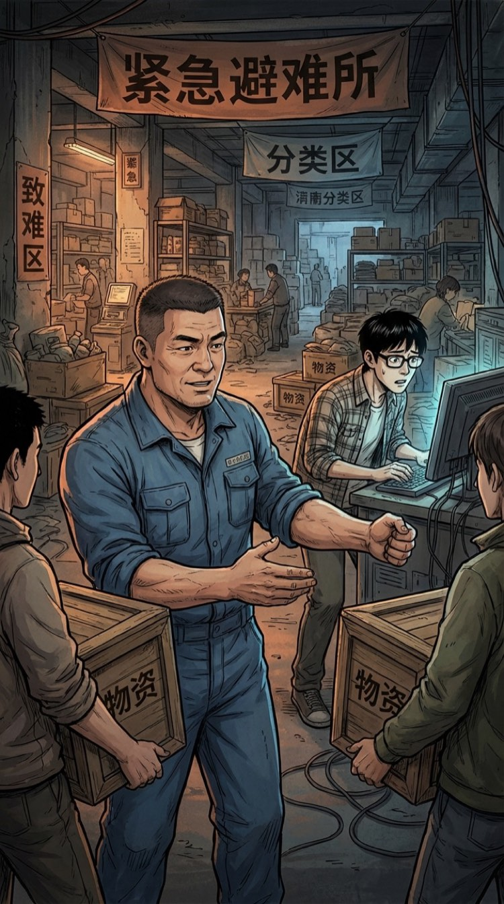
老赵在外面已经开始干活了。不知道从哪找来两个流浪的人，指挥他们搬运物资箱。
「这个放A区！那个放B区！食品和工具分开！」
S级物流调度——三千单快递练出来的条件反射。在末世立刻转化成了据点管理天赋。
投资回报率：一瓶水换来的S级员工，已经开始自动运转了。
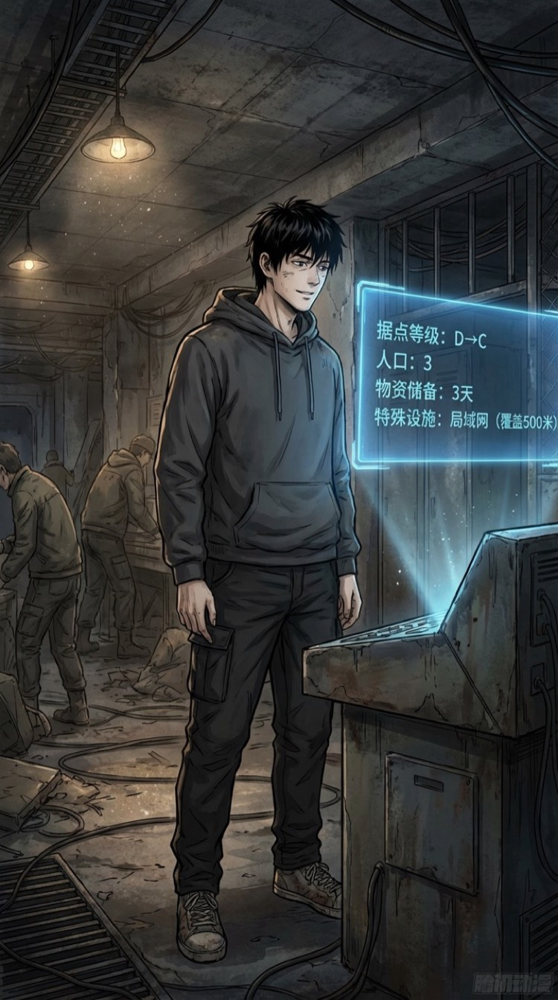
我站在分拣中心中间，环顾四周。老赵在调度，小陈在联网。系统面板自动更新：
……这系统是不是对我有意见？
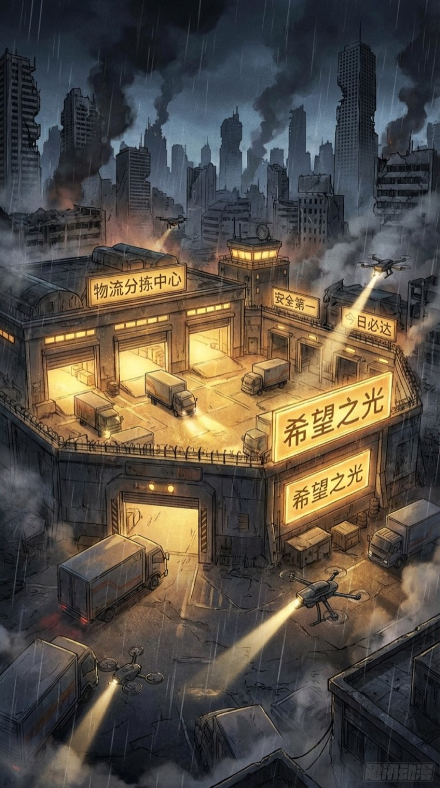
夜幕降临。
从外面看，整个城市一片漆黑。只有我们的分拣中心透出微弱的暖光。
三个陌生人，在末世第七天的夜里，围着一盏应急灯吃压缩饼干。
这是我创业以来，团队最小的时候。但不知道为什么，信心是最足的。
也许是因为——在末世里，所有人都回到了同一条起跑线。
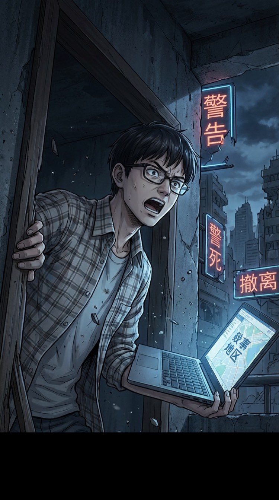
深夜。我刚躺下准备休息——
「朱哥！！朱哥！！」
小陈抱着笔记本电脑冲过来，眼镜都歪了。
「局域网收到信号了！有人发了求救信息！」
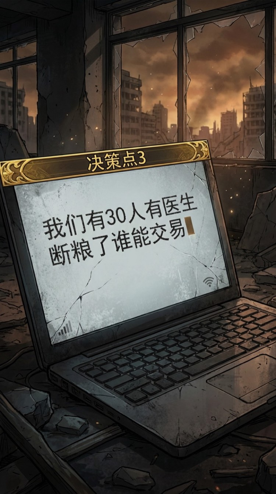
屏幕上，一行粗糙的文字在闪烁：
老赵也凑过来了，三个人围着这块小屏幕。
5公里外，30个人，有医生。断粮求救。但——深夜、未知、可能是陷阱。
「菩萨心肠，霹雳手段。想帮，但先确保安全。」
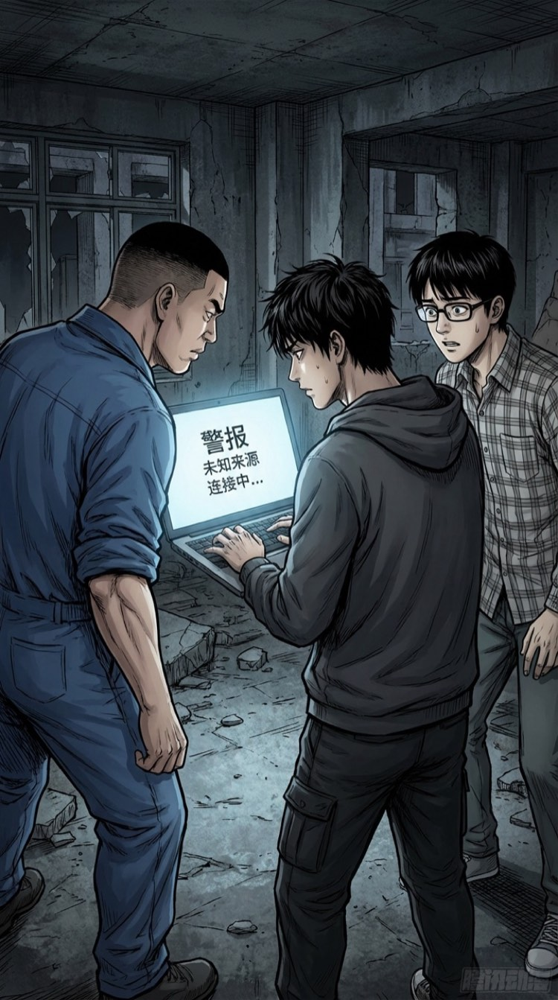
「小陈，能回复但不暴露我们的位置吗？」
「可以。我用中继节点跳转，他们最多定位到一公里范围。」
「那就回复。就说我们有物资，可以谈。让他们先发个视频证明情况。」
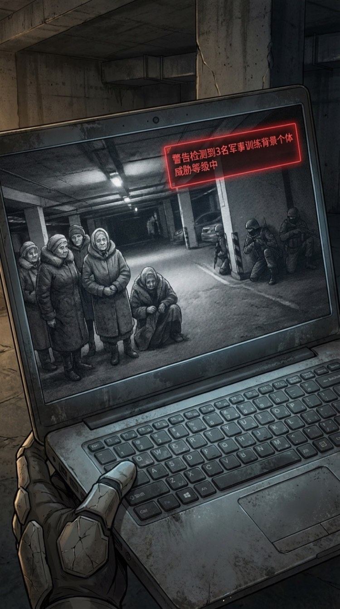
几分钟后，对方发来一段视频。画面很模糊——一个地下停车场，三十多个人挤在一起。确实有妇女和老人。
但我注意到了角落里——
有几个人的姿态不对。站得太直、太警觉。而且……他们手边有东西。
这帮人……不是普通的难民。
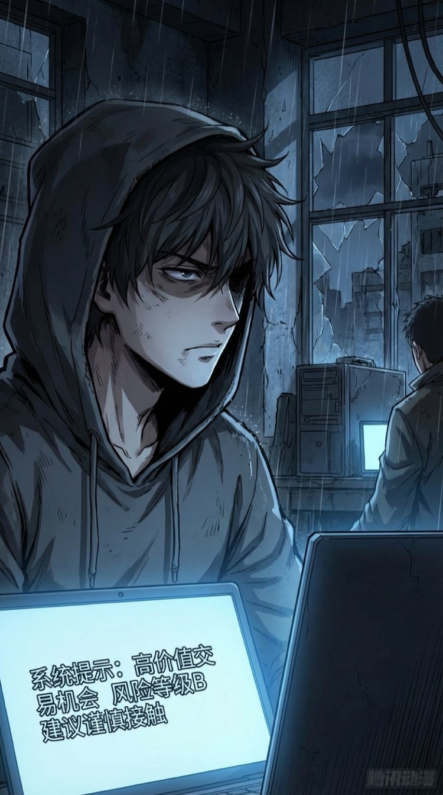
我关掉屏幕。
灯光打在半张脸上，另外半张藏在黑暗里。
「这帮人，不简单。」
老赵和小陈紧张地看着我。
末世创业第一天。我用一瓶水和两块饼干，换来了一个S级物流专家、一个A级程序员、一个A级资源管理者的合作。
现在，一个更大的机会摆在面前。
但这次的代价，可能不只是一瓶水。
朱江如何用商业思维破解"半真半假"的求救信号？
30人据点——是盟友还是威胁？
商业系统 Lv2 即将解锁……
▸ 第二章：《信息差就是生死差》即将更新